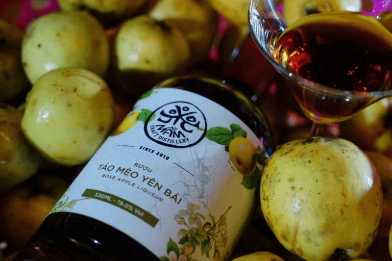
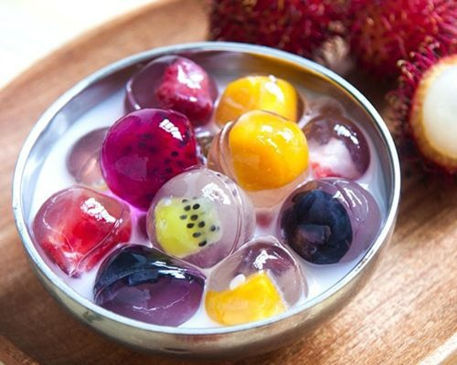
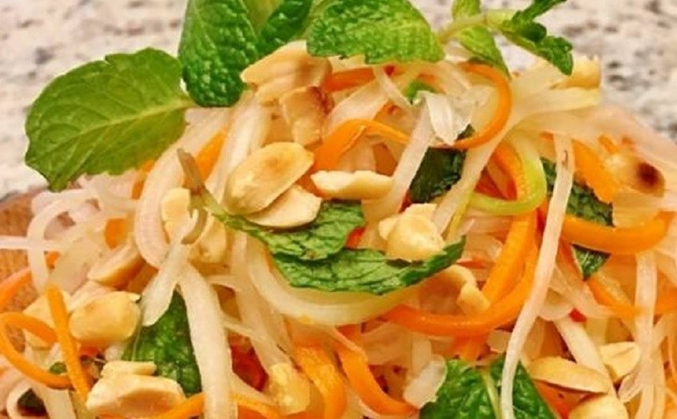
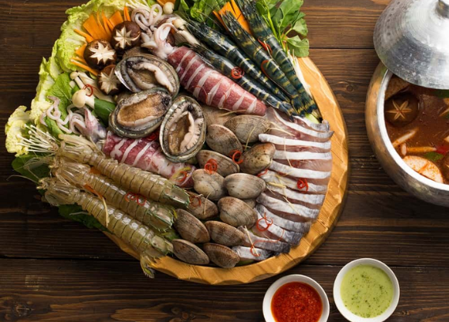
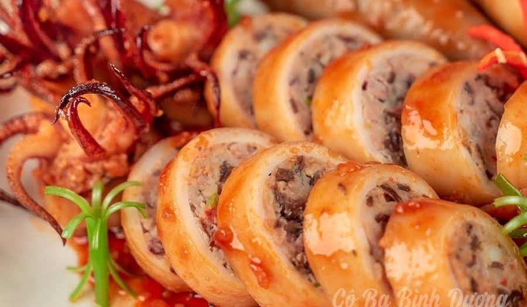

| Táo Mèo Yên Bái | Chè thạch trái cây | Gỏi đu đủ chay | Lẩu hải sản kiểu Pháp | Mực dồn thịt |
|  |  |  |  |  |
| Táo Mèo là tên gọi Khác của cây có tên là Sơn Trà. Sở dĩ Sơn Trà có thêm cái tên táo mèo vì ... | Nấu 1,5 lít nước với 200g đường cho tan. Cho nho vào, nấu sôi. Tiếp tục cho nhân vào chung, ... | Bắt chảo dổ chút dầu cho hành, tỏi chiên hơi vàng cho tôm vô xào với bột nêm khoảng 2 phút ... | Xương cá rửa xạch, lược sơ qua nước sôi rồi vớt ra. Nấu nước sôi, sau đó để lửa vừa, cho xương cá, cần tây, ... | Nước ngọt do mực tiết ra trong khi hấp có thể dùng để pha chế sốt cà chua hoặc nêm nếm ... |
| Xem tiếp | Xem tiếp | Xem tiếp | Xem tiếp | Xem tiếp |